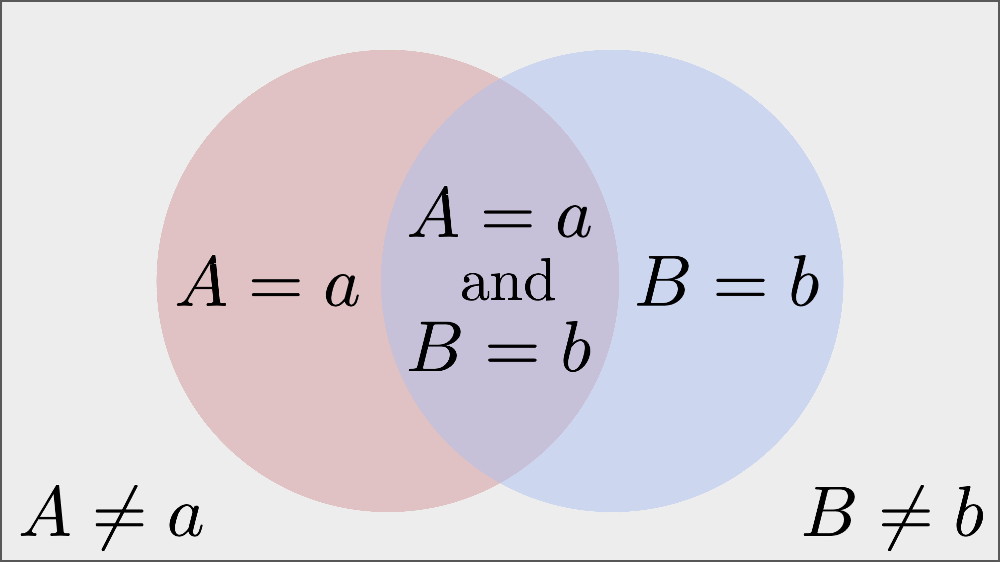
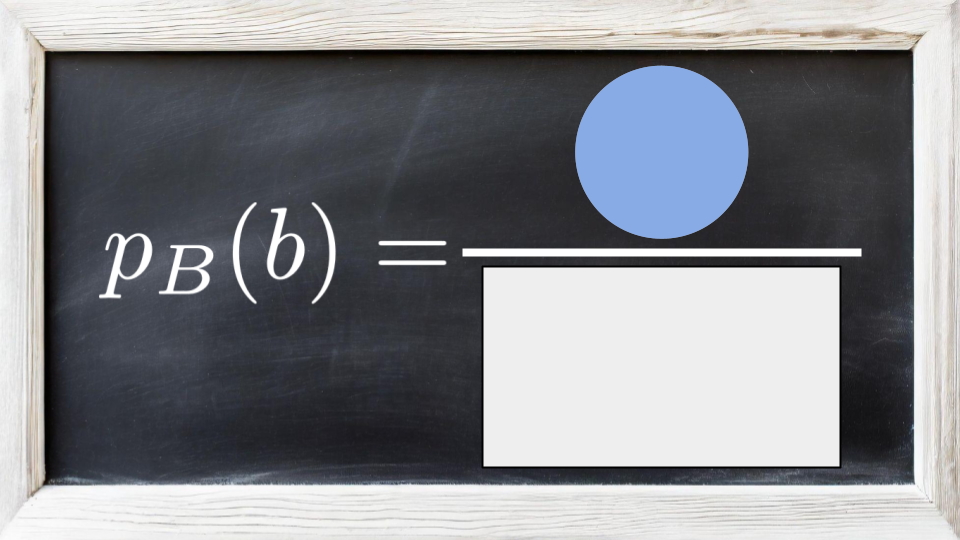
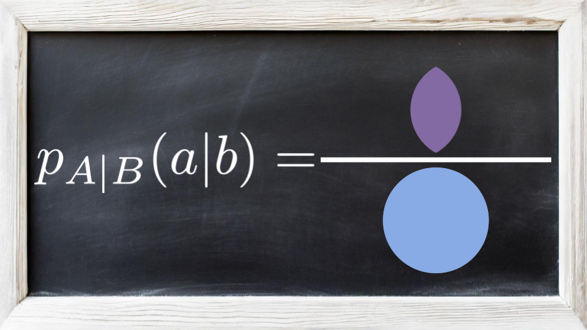
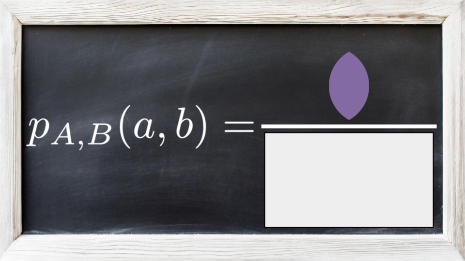

6. Joint Probability (Discrete)#
# Import some helper functions (please ignore this!)
from utils import *
Context: So far, you’ve spent some time conducting a preliminary exploratory data analysis (EDA) of IHH’s ER data. You noticed that considering variables separately can result in misleading information. As a result, you decided to use conditional distributions to model the relationship between variables. Using these conditional distributions, you were able to develop predictive models (e.g. predicting the probability of intoxication given the day of the week), These predictive models are useful for the IHH administration to make decisions.
However, you’ve noticed that your modeling toolkit is still limited. The conditional distributions we introduced can model how the probability of one variable changes given a set of variables. What if we wanted to describe how the probability of a set of variables (i.e. more than one) changes given a set of variables? For example, we may want to answer questions like: “how does the probability that a patient is hospitalized for an allergic reaction change given the day of the week?” In this question, we’re inquiring about two variables—that the condition is an allergic reaction, and that the patient was hospitalized—given the day of the week.
Challenge: We need to expand our modeling toolkit to include yet another tool—joint probabilities.
Outline:
Introduce and practice the concepts, terminology, and notation behind discrete joint probability distributions (leaving continuous distributions to a later time).
Introduce a graphical representation to describe joint distributions.
Translate this graphical representation directly into code in a probabilistic programming language (using
NumPyro) that we can then use to fit the data.
6.1. Terminology and Notation#
We, again introduce the statistical language—terminology and notation—to precisely specify to a computer how to model our data. We will then translate statements in this language directly into code in NumPyro that a computer can run.
Concept: The concept behind a joint probability is elegant; it allows us to build complicated distributions over many variables using simple conditional and non-conditional distributions (that we already covered).
We can illustrate this using an example with just two variables. Suppose you have two RVs, \(A\) and \(B\). The probability that \(A = a\) and \(B = b\) are both satisfied is called their joint probability. It is denoted by \(p_{A,B}(a, b)\). This joint distribution can be factorized to a product of conditional and non-conditional (or “marginal”) distributions as follows:
Notice that the joint is now described in terms of conditional and marginal distributions, which we already know how to work with!
Intuition: So what’s the intuition behind this formula? Let’s depict events \(A\) and \(B\) as follows:
{kind=link}
Using the above diagram, we can pictorally represent all distributions of interest. The marginal \(p_B(b)\) is the ratio of the blue circle relative to the whole space (the gray square):
{kind=link}
The conditional \(p_{A | B}(a | b)\) is the ratio of the purple intersection relative to the blue circle. This is because the blue circle represents us conditioning on \(B = b\), and the intersection of the circles represents the observations for which we also have \(A = a\).
{kind=link}
Finally, the joint \(p_{A, B}(a, b)\) is the ratio between the purple intersection and the whole space (the gray square). This is because the intersection is the place where both \(A = a\) and \(B = b\).
{kind=link}
Now we can see that the joint is the product of the conditional and the marginal because the blue circles “cancel out”:

Choice of Factorization: Lastly, notice that we have a choice to factorize the distribution in two ways. How do you know which one to use? Typically, we choose a factorization that is intuitive to us and what we can compute.
For example, suppose you want to model the joint distribution of the day of the week, \(D\) and whether a patient arrive with intoxication, \(I\). The joint distribution can be factorized in two ways:
\[\begin{align*} p_{D, I}(d, i) &= p_{I | D}(i | d) \cdot p_D(d) \quad \text{(Option 1)} \\ &= p_{D | I}(d | i) \cdot p_I(i) \quad \text{(Option 2)} \\ \end{align*}\]Which one makes more intuitive sense? Well, it’s a little weird to try to predict the day of the week given whether a patient arrives with intoxication; we typically know what the day of the week is and we don’t need to predict it. In contrast, given the day of the week, it makes a lot of sense to wonder about the probability of a patient arriving with intoxication. As such, Option 1 makes more sense here.
Generalizing to More than Two RVs: So now we have the tools to work with joint distributions with two RVs. What do we do if we have three or more? The same ideas apply. The joint distribution for random variables \(A\), \(B\), and \(C\) can be factorized in a number of ways. For example, we can condition on two variables at a time:
Here, we already know how to factorize \(p_{B, C}(b, c)\), \(p_{A, C}(a, c)\), and \(p_{A, B}(a, b)\).
We can also condition on one variable at a time:
And how do we further factorize distributions of the form \(p_{A, B | C}(a, b | c)\)? We apply the same factorization for a joint distribution with two variables, and simply add a “conditioned on \(C\)” to each one:
6.2. Translating Math to Code with NumPyro#
What is NumPyro? NumPyro is a “Probabilistic Programming Language” based in Jax. It provides an interface for (nearly) direct translation of the stats/math we wrote above into code that we can use to fit to data, make predictions, and more. This will allow us to focus on the conceptual ideas behind probabilistic ML.
Instantiating Distributions in NumPyro. NumPyro comes with many distributions already implemented. For a complete list of all available discrete distributions, check out the this part of the documentation. So why use NumPyro instead of implementing the distributions on our own? It’s easy to write subtle bugs that are hard to catch when implementing mathematical formulas in code. Also, using NumPyro’s distributions will help us highlight the overall logic of the code, instead of getting bogged down by the mathematical details.
Distributions in NumPyro have several notable properties and methods we will rely on. Let’s explore them together. First, we import the necessary components of NumPyro:
import jax.numpy as jnp
import jax.random as jrandom
import numpyro
import numpyro.distributions as D
Now, let’s instantiate the simplest discrete distribution we know: the Bernoulli distribution.
Recall that a Bernoulli distribution takes in just one parameter, \(\rho \in [0, 1]\), which determines the probability of sampling \(X = 1\) vs. \(X = 0\). Here let’s instantiate the Bernoulli distribution with \(\rho = 0.7\).
rho = jnp.array(0.7)
p_X = D.Bernoulli(rho)
That’s it!
Evaluating the PMF of NumPyro Distributions. Now, if we want to evaluate the PMF, we can use log_prob method as follows (note that this returns the log of the PMF, so we’ll have to exponentiate the result):
log_p_x_eq_1 = p_X.log_prob(jnp.array(1.0))
print('Probability of sampling a 1:', jnp.exp(log_p_x_eq_1))
log_p_x_eq_0 = p_X.log_prob(jnp.array(0.0))
print('Probability of sampling a 0:', jnp.exp(log_p_x_eq_0))
Probability of sampling a 1: 0.7
Probability of sampling a 0: 0.3
Sampling from NumPyro Distributions. NumPyro distributions all have a sample method which can be used to draw samples. It takes in two arguments:
A random-generator “key,” which controls the randomness of the sample.
A shape, describing the number of i.i.d samples you want to draw.
Let’s give it a go:
shape = (15,) # Shape of i.i.d samples we wish to draw
key1 = jrandom.PRNGKey(seed=0) # Create a random-generator key
print('First batch drawn with key1: ', p_X.sample(key1, shape))
print('Second batch drawn with key1:', p_X.sample(key1, shape))
key2 = jrandom.PRNGKey(seed=1) # Create a random-generator key
print('Third batch drawn with key2: ', p_X.sample(key2, shape))
First batch drawn with key1: [1 0 1 0 1 1 0 1 1 1 0 0 1 1 1]
Second batch drawn with key1: [1 0 1 0 1 1 0 1 1 1 0 0 1 1 1]
Third batch drawn with key2: [1 1 1 0 1 1 1 1 1 1 1 1 0 1 1]
Notice in the above code, when using the same key twice (or the same seed), we get the exact same batch of samples. This is both a blessing and a curse. It’s a blessing because this allows us to precisely control the randomness of our ML code. This will prove crucial for debugging later on. However, it can also be a curse if we accidentally use the same key in a place where we need two different sources of randomness.
Best Practice: How to Manage Your Keys. As a rule of thumb, we introduce the following paradigm: NEVER USE THE SAME KEY TWICE. How can we do this? Jax allows us to take a random key and split it into multiple different keys, each of which can be used for different purposes. This means we can create ONE KEY to control the randomness of our entire code. We can then split this key into multiple keys as needed. Here’s how we can do this:
# Create ONE KEY to be used by your ENTIRE CODE
key = jrandom.PRNGKey(seed=0)
# Whenever you need to use the key for multiple purposes, split it into parts:
key_first, key_second, key_third = jrandom.split(key, 3)
# Use each part for each need
print('First batch drawn with key_first: ', p_X.sample(key_first, shape))
print('Second batch drawn with key_second:', p_X.sample(key_second, shape))
print('Second batch drawn with key_third: ', p_X.sample(key_third, shape))
First batch drawn with key_first: [1 1 1 1 1 1 1 1 0 1 1 0 1 1 1]
Second batch drawn with key_second: [1 1 0 0 1 1 0 1 1 1 0 1 1 0 1]
Second batch drawn with key_third: [0 0 1 1 1 1 1 1 1 0 1 1 1 0 0]
Vectorizing NumPyro Distributions.
Sampling from Joint Distributions: